Optimized Approach using Machine Learning on Credit Card Fraud Dataset
Use performance metrics to optimize machine learning algorithm to predict fraud transactions in Kaggle Credit Card Fraud Detection.
The goal of this research is to find out most significant features to predict whether a transaction in the dataset is committed to fraud. The structure of this article is: - Data Wrangling, in which I modify NA values and remove outliers - Feature Selecting, in which I create some features I think important to predict fraud - Training and tuning machine learning, in which I use sklearn to train 4 different models and compare their performance matrices, including precision, recall and f1 score, and plot ROC curves to compare the models - Final part, in which I select Naive Bayes as my best model - Conclusion
1. Data Wrangling
Firstly, load the dataset:
df = pd.read_csv("creditcard.csv")
df.shape
(284807, 31)
df.columns
Index([u'Time', u'V1', u'V2', u'V3', u'V4', u'V5', u'V6', u'V7', u'V8', u'V9',
u'V10', u'V11', u'V12', u'V13', u'V14', u'V15', u'V16', u'V17', u'V18',
u'V19', u'V20', u'V21', u'V22', u'V23', u'V24', u'V25', u'V26', u'V27',
u'V28', u'Amount', u'Class'],
dtype='object')
The total fraud and the ratio of fraud in this dataset are:
sum(df.Class), round(sum(df.Class)*1.0/df.shape[0],5)
(492, 0.00173)
This dataset presents transactions that occurred in two days, where we have 492 frauds out of 284,807 transactions. The dataset is highly unbalanced, the positive class (frauds) account for 0.173% of all transactions.
Since the dataset is processed and now there’s no NA values, so no need to clean the dataset.
On the other hand, the dataset is processed by PCA, so I would assume all outliers, if any, would not be meaningless.
2. Feature Selecting
Then, to begin with, I use all features and, under each algorithm I tune, use KBest to select features by their scores and compare the recall/precision rate.
One more step before start fitting is re-scale the data by sklearn.MinMaxScaler, because some of the algorithms I will implement might require re-scale features to avoid skewed distance and biased result.
min_max_scaler = preprocessing.MinMaxScaler()
features = min_max_scaler.fit_transform(features)
data_all = SelectKBest(f_classif, k='all').fit(features,labels)
# fit_transform(X, y)
import operator
scores = data_all.scores_
score_dict = {}
for ii in range(len(features_list) - 1):
score_dict[features_list[ii+1]] = round(scores[ii],2)
sorted_score_dict = sorted(score_dict.items(), key=operator.itemgetter(1), reverse=False)
Then I plot the features sorted by their scores:
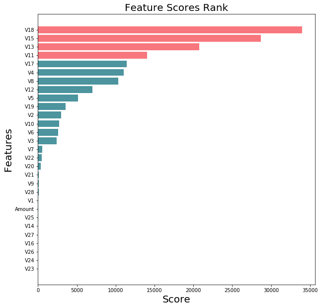
From the plot, it seems 7 is a great cut-off to select features because more than 7 features will not have high score. However, here I will keep this plot as a reference, I will explore more about how the recall rate and precision rate will be changed and then compare all these plot to select best combination.
3. Training and Tuning Machine Learning
Before training, I will use validation to see how algorithms generalized to the overall data outside training data. Without validation, there’s pretty high risk of overfitting.
After that, I run each model independently and tune for the best performance of each type of model.
3.1 About Tuning Models
It’s very important to tune the model, not only because each model, there might be a lot of combination of parameters and hence make big influence on performance of our model, but also, we can have better chance to see how model can better match the data in an optimization process.
Without tuning the model, we might save a lot of time and get a good result, but there’s always a question “can we do better” over the head. And if the model get bad prediction when there’s new data coming, we even don’t know where the problem is. So tune the model might cost sometime, but it did save time in future for further exploration and better improved the performance and robustness of model.
3.2 Naive Bayes
Similarly, I tune the model for each K from 1 to 25, and plot the performance matrices:
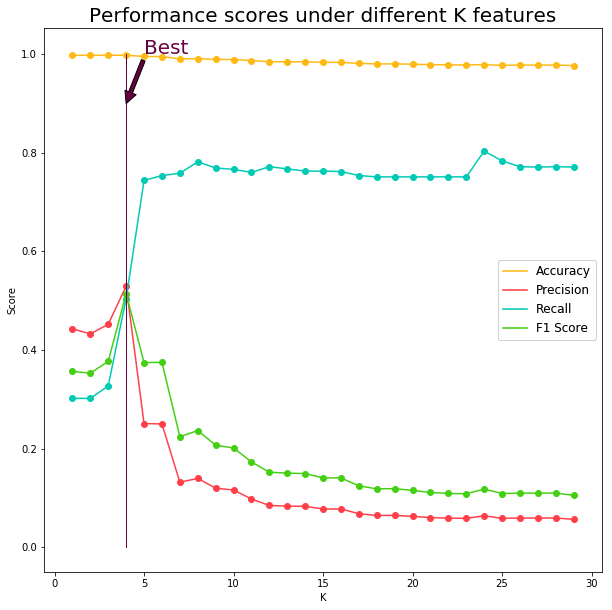
The accuracy is an average score to show how much percentage we get the right prediction. As it’s not suitable for skewed features, here I add precision and recall matrices to evaluate.
Precision is how much probability we get a sample with true if it’s tested positive. By bayes prior and post probability:
In other words, precision is a measure of result relevancy, while recall is a measure of how many truly relevant results are returned:
- Higher precission means, with transaction identified as fraud by this model, we have higher correct rate
- Higher recall means, if the transaction is fraud, then we have higher chance to identify correctly
Here we can see:
The higher recall might make precision lower, which causes a lot of non-fraud transactions to be commited fraud. So I will keep a balance here and select K = 4
Now test in test set:
Accuracy: 1.00
Precision: 0.57
Recall : 0.58
F1 score: 0.57
ROC Curve
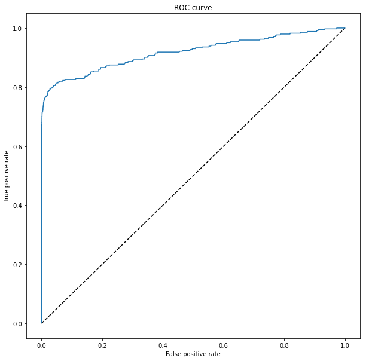
Problems of models: Assumption of independence between transactions is not necessarily meet.
3.3 Decision Tree
The process is similar, but here we should set the parameters of Decision Tree and use GridSearch and visualization to get the best performance.
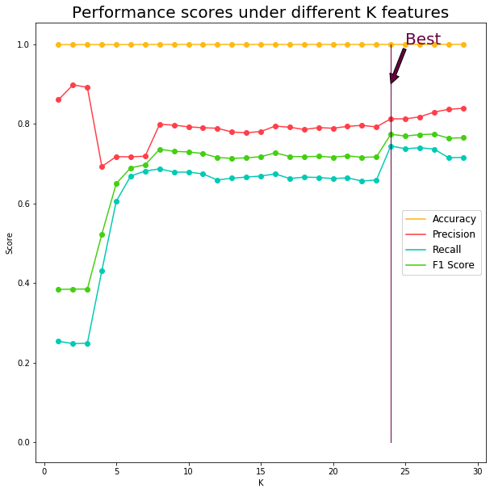
From the plot we can see the model reach optimal when K = 24. Here I use this to train and tune the Decision Tree model again to find the best combination of parameters:
Accuracy: 1.00
Precision: 0.86
Recall : 0.76
F1 score: 0.80
And the best parameters are:
grid_search.best_estimator_
DecisionTreeClassifier(class_weight=None,
criterion='entropy',
max_depth=3,
max_features=None,
max_leaf_nodes=None,
min_impurity_split=1e-07,
min_samples_leaf=1,
min_samples_split=2,
min_weight_fraction_leaf=0.0,
presort=False,
random_state=None,
splitter='best')
Here we care Recall and Precision the most because we want our model to increase probability to correct identify fraud with the transactions which are truely fraud and probability to get right fraud identification when we have positive test result. Thus, K = 27 will be a better choice.
And ROC curve:
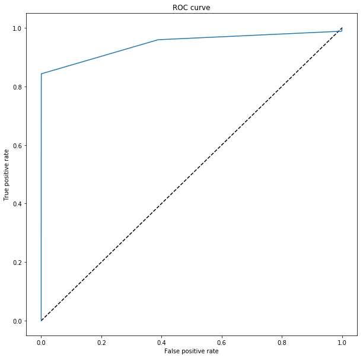

3.4 Support Vector Machine
The 3rd type of model I want to use is SVM, because we have multi-dimensional dataset and big dataset. SVM’s hyper-plane have its advantages when we have enough features to train the model.
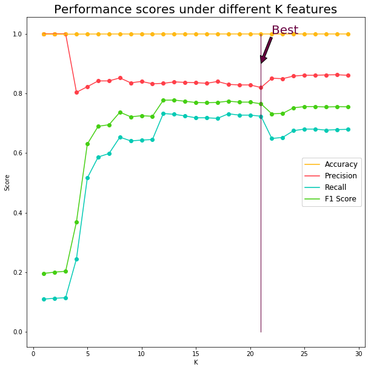
For SVM, we reach optimal at K = 21. Because F1 score, which is used to balance the precision and recall reaches optimal when k is 21.
Accuracy: 1.00
Precision: 0.89
Recall : 0.77
F1 score: 0.83
The best parameters are:
grid_search.best_estimator_
SVC(C=100,
cache_size=200,
class_weight=None,
coef0=0.0,
decision_function_shape=None,
degree=3,
gamma=0.001,
kernel='rbf',
max_iter=-1,
probability=False,
random_state=None,
shrinking=True,
tol=0.001,
verbose=False)
# ROC Curve, probability in SVC should be set to True to enable proba method
clf = svm.SVC(C=100, gamma=0.0001, kernel='rbf', probability=True)
y_score = clf.fit(features_svm_train,
labels_svm_train).predict_proba(features_svm_test)[:, 1]
fpr_rf_svm, tpr_rf_svm, _ = metrics.roc_curve(labels_svm_test, y_score)
plt.figure(figsize=(10,10))
plt.plot([0, 1], [0, 1], 'k--')
plt.plot(fpr_rf_svm, tpr_rf_svm, label='RF + LR')
plt.xlabel('False positive rate')
plt.ylabel('True positive rate')
plt.title('ROC curve')
plt.show()
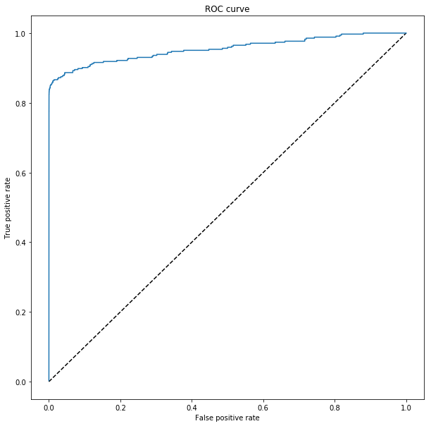
SVM model does have the best ROC curve among the 3 types of models we tried.
3.5 Adaboost (Based on Decision Tree)
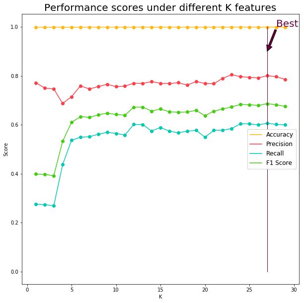
It seems the more features, the better adaboost will perform. Here we can see when K= 27, we reach optimal.
Accuracy: 1.00
Precision: 0.85
Recall : 0.71
F1 score: 0.77
grid_search.best_estimator_
AdaBoostClassifier(algorithm='SAMME.R',
base_estimator=None,
learning_rate=1.0,
n_estimators=50,
random_state=None)
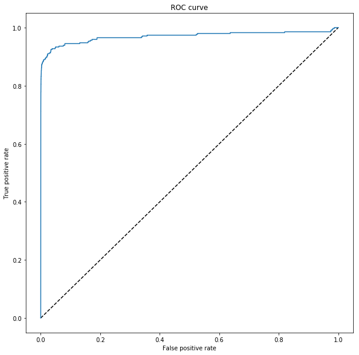
Logistic Regression
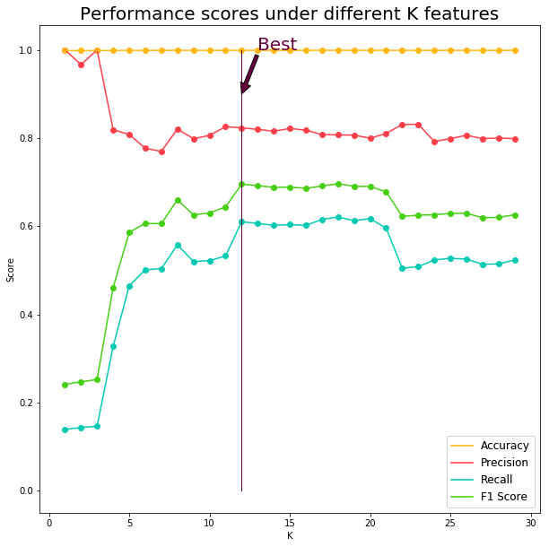
Accuracy: 1.00
Precision: 0.89
Recall : 0.56
F1 score: 0.69
grid_search.best_estimator_
LogisticRegression(C=1.0,
class_weight=None, dual=False, fit_intercept=True,
intercept_scaling=1, max_iter=100,
multi_class='ovr', n_jobs=1,
penalty='l2', random_state=None,
solver='liblinear', tol=0.0001,
verbose=0, warm_start=False)
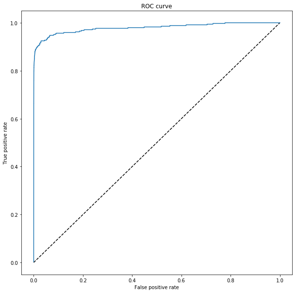
4. Discussion
Now let’s put together and select the best model and feature list.
| Score Type | Naive Bayes | Decision Tree | SVM | Adaboost | Logistic Regression |
|---|---|---|---|---|---|
| Num of features | 4 | 24 | 23 | 27 | 12 |
| Accuracy | 1 | 1 | 1 | 1 | 1 |
| Precision | 0.57 | 0.86 | 0.89 | 0.85 | 0.89 |
| Recall | 0.58 | 0.76 | 0.77 | 0.71 | 0.56 |
| F1 score | 0.57 | 0.80 | 0.83 | 0.77 | 0.69 |
Recall the ROC curves:
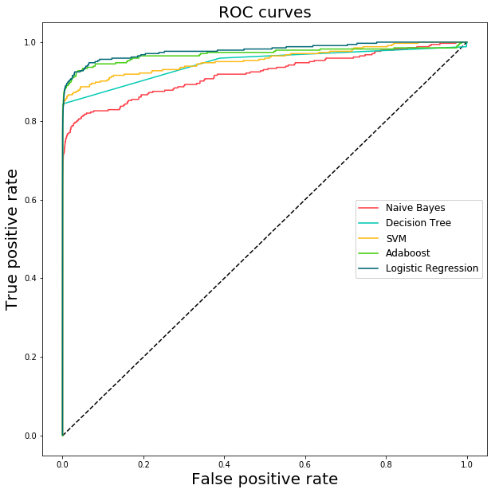
I notice best model for out of sample test here is when K = 21, we use SVM with parameters:
SVC(C=100, cache_size=200, class_weight=None, coef0=0.0, decision_function_shape=None, degree=3, gamma=0.0001, kernel=’rbf’, max_iter=-1, probability=False, random_state=None, shrinking=True, tol=0.001, verbose=False)
The best performance in testing set is:
Precision: 0.841823 Recall: 0.796954 Accuracy: 0.999390 F1 Score: 0.818774
Combined Classifier
How about if I use 3 of the best classifiers here?
Accuracy: 1.00
Precision: 0.89
Recall : 0.77
F1 score: 0.83
Which is actually what we achieved by SVM.
5. Conclusion
In this report I firstly summarize the dataset, use visualization to find out interesting correlations among fraud and other features. Then I train 3 different models, and finally find SVM as my best model and number of features K = 21.
This is a quantative analysis and can only be a reference for commitment. The real procedure of fraud commitment is quite complex.
In future, to improve the accuracy of the model, I think there’re some ways we can try:
- Given more detailed dataset, more features might have risk of overfitting, but more data can possibly provide more informaiton we need
- Given more data with fraud so it will be easier to catch up with more significant predictors.